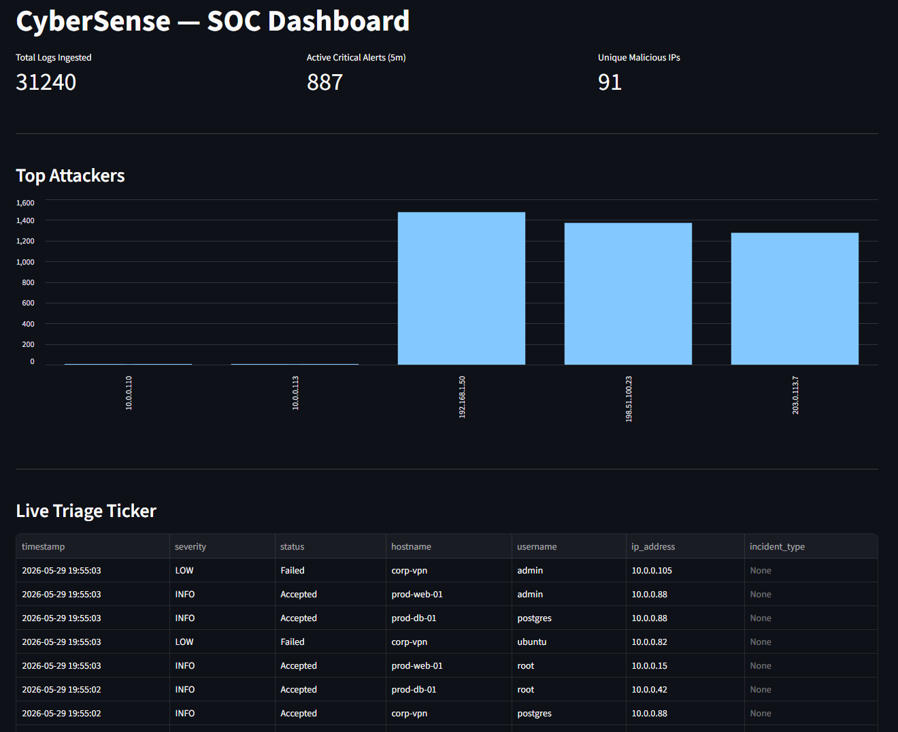
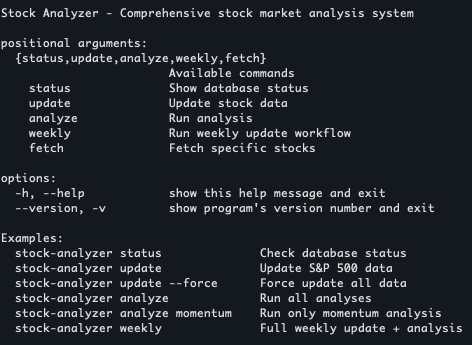
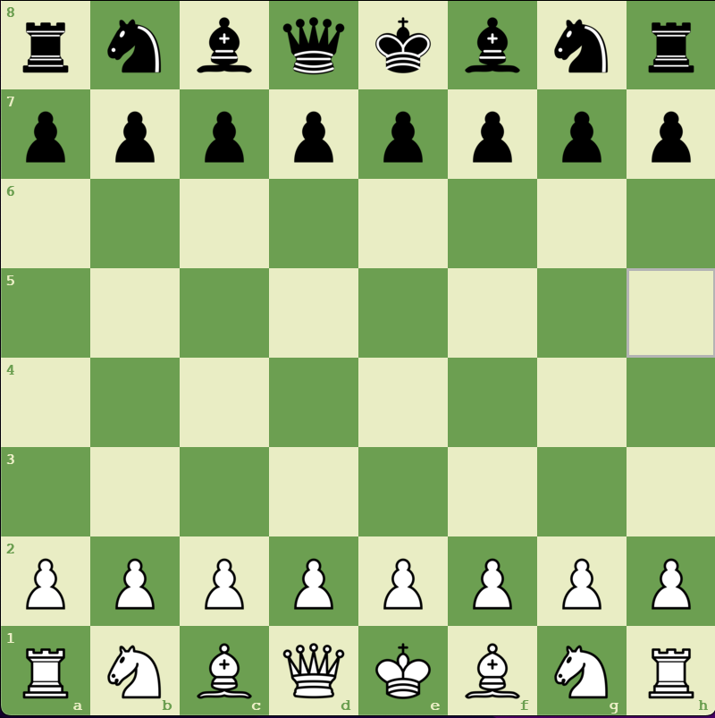
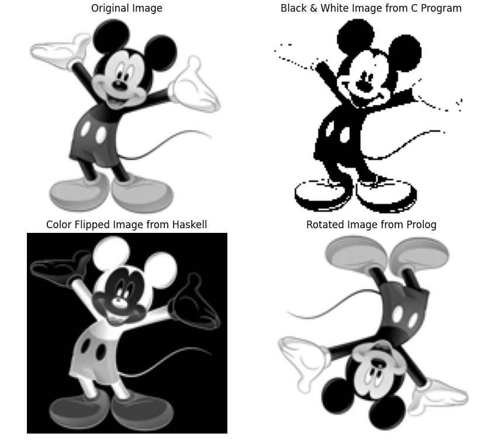
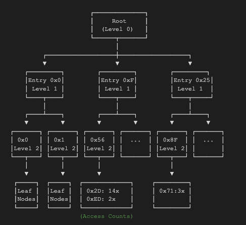
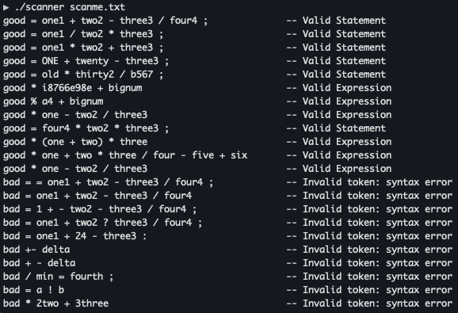
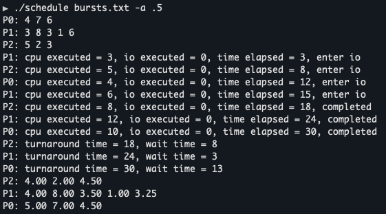
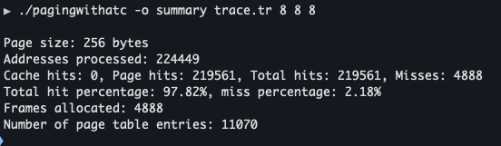

Projects
Core Data & Analytics Portfolio

CyberSense Pipeline
End-to-end ETL pipeline ingesting SOC log streams in real time, parsing and enriching events with a multi-threaded producer, then powering a live Streamlit analytics dashboard for brute-force threat detection.
Real-time SOC ETL · 3 producer threads · 60s sliding-window detection · 19 pytest cases · Postgres + Docker
San Diego Housing Analysis LIVE DEMO
Auditable Pandas/NumPy preprocessing pipeline feeding a predictive regression model that prices San Diego Airbnb listings, with results surfaced through an interactive Streamlit dashboard.
~13K listings · 101 neighborhoods · Random Forest MAE $85 · R² 0.69 · Live on Streamlit Cloud
Weather Automation Pipeline
Containerized ETL architecture that ingests weather APIs into a PostgreSQL time-series warehouse via SQLAlchemy upsert logic, with a one-command Docker stack for reproducible deployment.
PostgreSQL 16 · SQLAlchemy 2.x · Idempotent INSERT…ON CONFLICT upserts · Docker Compose · healthcheck-gated
Stock Analyzer & Algorithmic Trading
Modular S&P 500 analytics platform with a multi-threaded ingestion pipeline, thread-safe SQLite storage, and a scikit-learn voting classifier (LinearSVC + KNN + RandomForest) generating buy/sell/hold signals.
230+ tickers · 1,600+ days of history · ~3.5 min vs ~20 min serial · 8-worker ThreadPoolExecutor · Voting classifier MLSystems Engineering & CS Foundations

Chess Game
Fully-featured chess game in Python/Pygame with PvP and AI modes

Image Manipulation
Multi-language image processing with Python, MATLAB, C, Haskell, and Prolog

Page Table Simulator
C++ multi-level page table simulator for memory access pattern analysis

Statement Parser
Flex/Bison implementation for parsing arithmetic expressions and assignment statements

CPU Scheduler
Multi-threaded CPU scheduling simulator implementing Shortest Job Next (SJN) algorithm

SIC-XE Assembler
Two-pass assembler implementation for SIC/XE architecture with symbol table generation

Dining Seating System
Multi-threaded producer-consumer system simulating restaurant seating management with robots

Virtual Memory Simulator
Multi-level page table simulation with TLB support for virtual memory management